Offringa->RFI software->Strategy example A
Author: André Offringa, 2011-01-28
In this example I will try to demonstrate tweaking of some of the parameters of the default strategy when by itself it does not work well enough. I will try to flag an WSRT observation of B1834 with 10 second integration and 512 channels of 5 kHz each. Below is baseline RT0 x RT1, a 144m baseline.
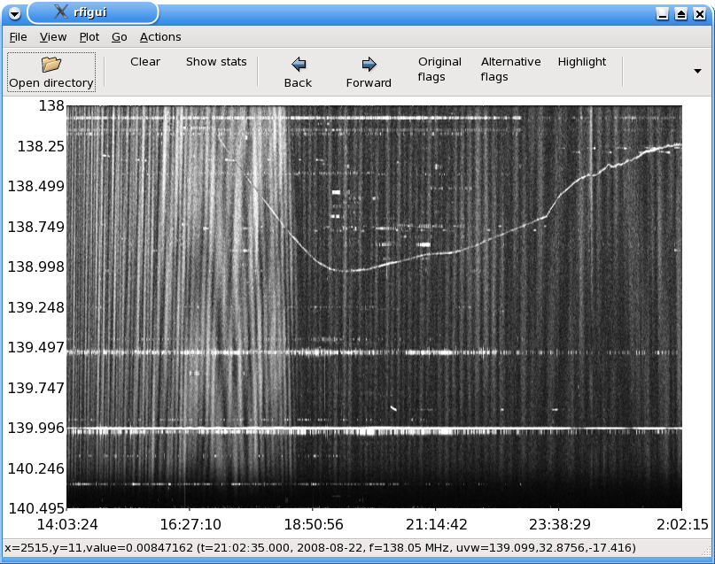Notice the very strong fringes. I will use this baseline to experiment on, since it is a good case of RFI, plus the fringes go from very fast (at the start) to rather slow, so if the flagger can handle this baseline correctly, others should not be a problem either.
The strong fringes are due to the sun (the whitish area before 18:50 after which it evidently sets), and Cas A and Cyg A. Since the default strategy is LOFAR optimised, the default flagger does a very bad job by flagging 33% of the data:
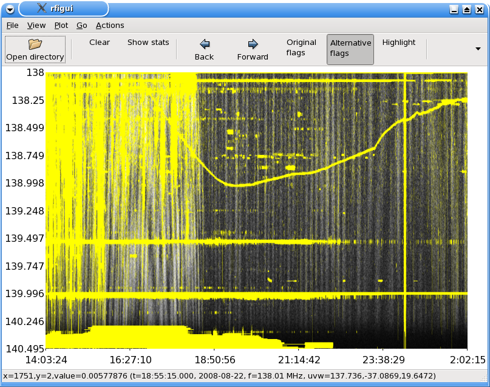While obviously the sun can be seen as an interfering source, I don't want to flag it, but rather try to subtract it at a later time. For this, I will assume you are familair with the RFI GUI (see the GUI tutorial).
Since I want to restart flagging, the first thing I do is remove the "Or flags with original" action, since otherwise my strategy output will include the flags of the previous run. If you rerun the strategy, nothing will be changed yet.
Now, I would like to see what happened to the background fit, to get a feeling of why it did not work correctly. To see this, I enable the "Restore from amplitude" button in the "On amplitude" action. This option only affect how the GUI interprets the results: rerunning the strategy again will not change anything. However, the Revised background image is now loaded in the GUI. You can see this by clicking the "Background" toolbar button:
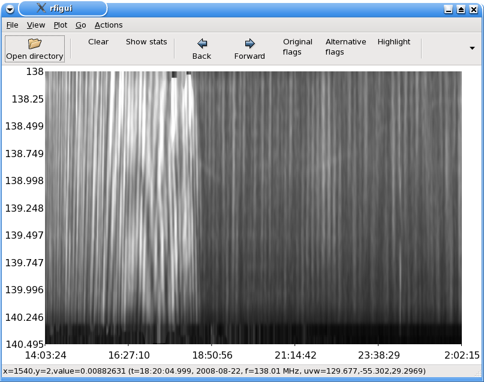Similarly, the "Difference" button will now show the difference between the original and the fitted background:

One word of caution; when you will now rerun the strategy, it will start with the already fitted background, i.e., the input of the algorithm is the differential image, not the original image. Therefore, you'll have to "reset" your baseline after each run, by reloading it. Alternatively, you can add a "Set contaminated = original" action as the first action in the strategy, which will make sure the contaminated (=diff) image is reset automatically.
You can already see that the background fit did actually remove a lot of the fringes. There are two visible problems at this point with the flagging: the fringes have not been removed completely and the pass-band is too steep. Remember that you are looking at Stokes I, and that an individual (cross) polarization might be the actual cause for a certain flag.
A common problem is that not enough iterations have been performed, causing the threshold to drop quickly in each iteration. This might cause instabilities. To make sure this is not a problem, I enlarge the number of iterations to "5" and the sensitivity start number of the Iterate block to "8". The sensitivity of 8 will make sure that the first iteration is performed very conservately, and the extra iterations make sure that we are not leaving out data that has incorrectly been flagged in a previous run. In all, this will take more time to flag, but at least makes sure that problems are not due to stability issues. The result is a slightly smoother background and some improvement in fitting the pass-band, but the fringes are still flagged:
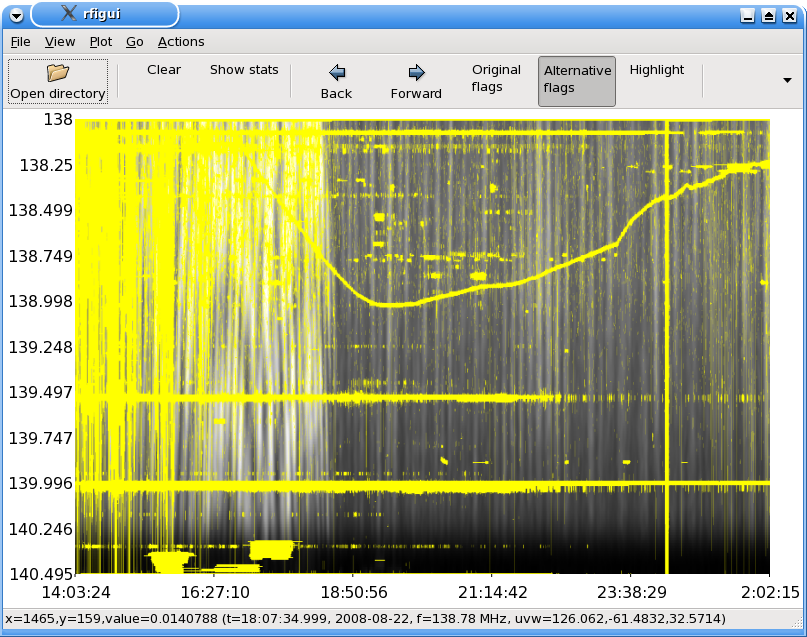The SumThreshold can be described as an algorithm that tries to find horizontal and vertical lines in the image. The fast fringes cause vertical artefacts in the differential image, hence the SumThreshold method will flag them. Several approaches can be taken now:
I will show the result of each. Obviously, the best solution can sometimes be a combination of these options.
The "kernel size" is a constraint on the smoothness of the fit. This can be controlled independently for both the time direction and frequency (resp. horizontal/vertical) direction.
Two actions play a role in the size of kernel width of the background. The first one is the "Change resolution size" and the second one is the "Sliding window fit" action. The "change resolution" action is an action to increase the speed of the flagger. It increases the effect of the sliding window fit action without much loss of precision. The default strategy currently has the following parameters:
In our image, the time direction varies more rapidly than the frequency direction. Therefore, I lower the kernel size in time direction, by changing "Change resolution / Time decrease factor" to "1".
The result is already a major improvement: (showing the differential image, 12.4% flagged)
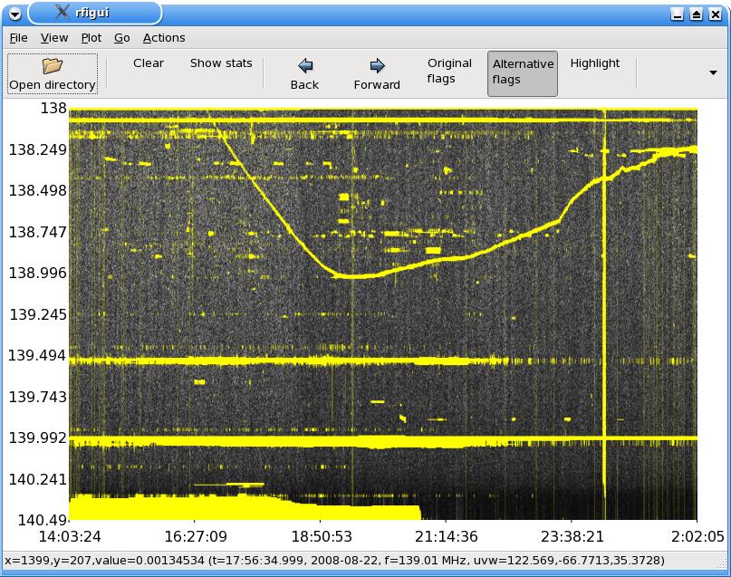The steep pass-band also still causes a problem in the bottom left of the image. However, even when I decrease the "Change resolution / Freq decrease factor" to "1", the flags in the bottom have not been corrected. The sensible thing to do now would be to divide the image by the (approximate) band-pass, as this is normally well known. However, for the sake of the exercise, I continue tweaking. Even when I decrease the kernel size to "1", the problems do not disappear. I could now disable fitting in frequency direction completely by setting the frequency window size (on contrast to kernel size) to "1", but this would make it much harder to find RFI, as frequencies will no longer be compared.
The root cause of this problem is the "Frequency selection" action. This action flags outlying frequencies based on their RMS, disallowing the sliding window fit to use that information. It is meant to allow faster convergence of the algorithm, but since we already slowed down the sensitivity convergence, we can safely remove it. This is the result of removing the Frequency selection action, and leaving the "Change resolution / Freq decrease factor" to "3" and leaving the vertical sliding window fit parameters to their original value: (9.5% of the data is flagged)
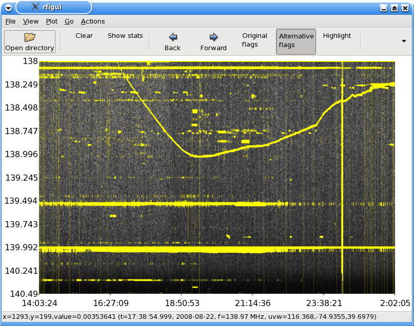The issue with the pass-band has disappeared. This is in most cases an acceptable result, but not perfect.
Another approach is to modify the threshold settings, to avoid flagging high values in frequency direction. In a normal situations, broadband RFI such as lightning or electrical fences can produce these. However, besides the "fringe" problem that is faced here, there might be other reasons not to flag in frequency direction, for example because one is searching for transients. This would make us slightly more vulnerable to leaked broad-band RFI, a trade off that should be considered.
We go back to our default strategy with 5 iterations. Two actions influence broadband flagging, that is, flagging of vertical lines in the image. The first action is the SumThreshold, which does the "per pixel" (yet combinatorial) tresholding. The SumThreshold has an option named "In frequency direction". By deselecting this option in both SumThreshold methods (note there are two SumThreshold actions which need to be changed both!), the result drastically improves: (13% was flagged)
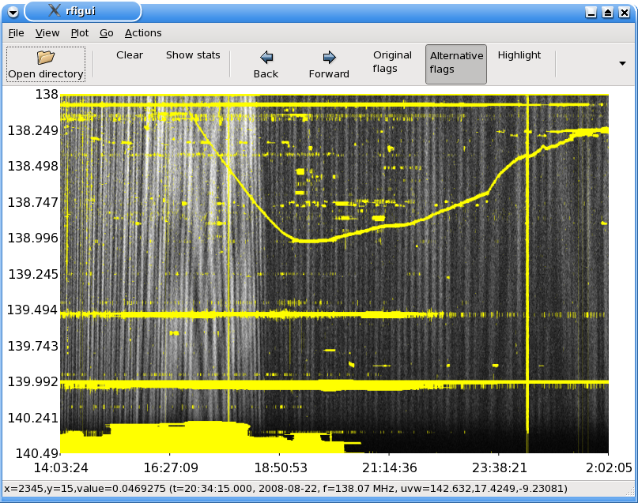Intuitively, this improvement is not so strange; even by eye, broad-band RFI is almost impossible to distinguish in this set, unless it is very strong.
At this point, we have to be careful. Note that this observation lasted twelve hours, and since we have a 10 second integration, this image represents over 4000 samples. Looking at the full image on a screen is not a good way of differentiating broadband RFI from false positives due to fringes. For example, when we zoom in (press "Zoom" in the "View" menu) on the first two hours of the observation, we see this: (flags have been turned off)
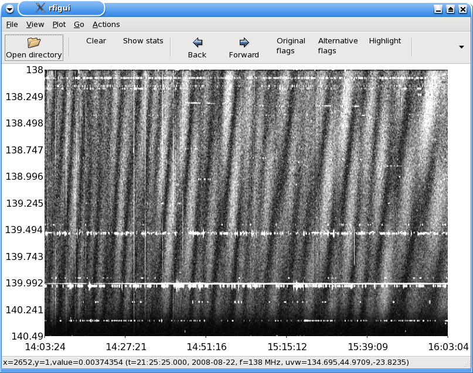This contains broad-band RFI, which was impossible to see in the full image. For those that are curious about its origin: that often remains a mystery to me. Sometimes, lightning causes such effects, but a starting car or even a camera near the antenna might similarly cause these effects -- but the latter are unlikely considering their length. The signal is not dispersed, so it is unlikely to be a celestial transient. Meteors often only reflect terrestrial RFI, which is not broadband. The sun might cause such artefacts, though these lines are also present at the end of the observation when the sun is down. In short; we want to flag these lines, because they will decrease the SNR. Fortunately, even without frequency direction SumThresholding, these lines are all flagged:
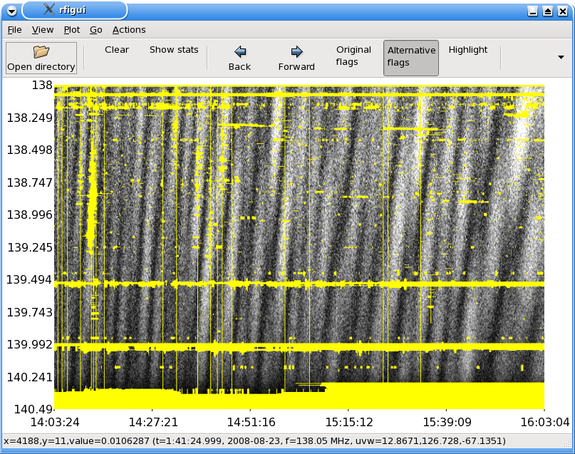The broad-band RFI has been flagged by the two "Time selection" actions. These actions flag time steps that have an RMS which differs significantly from its neighbours. If I would remove both Time selection actions, this is the result:
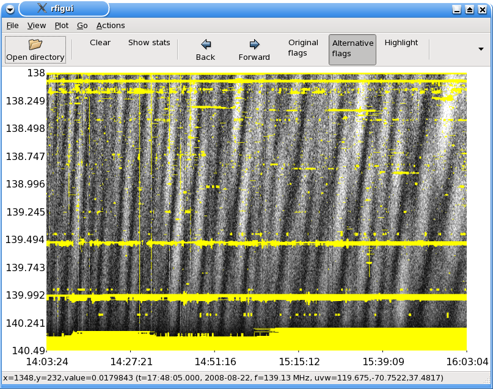My conclusion would be that the Time selection action was actually doing a good thing. It lowers the ratio of flags from about 13% to 12.3%, but a large part of this 0.7% is actual unwanted interference. The conclusion on the frequency direction flagging would be that the RMS check should remain, but that SumThresholding in frequency direction is doing not much good in this set.
Once again I go back to my original strategy with 5 iterations. A last parameter which is often good for solving issues, is the sensitivity of the SumThreshold action. I can fix my original very bad result at once by changing the base threshold of both SumThreshold actions to "2" instead of its default "1". The result is a good result with 8.5% flags:
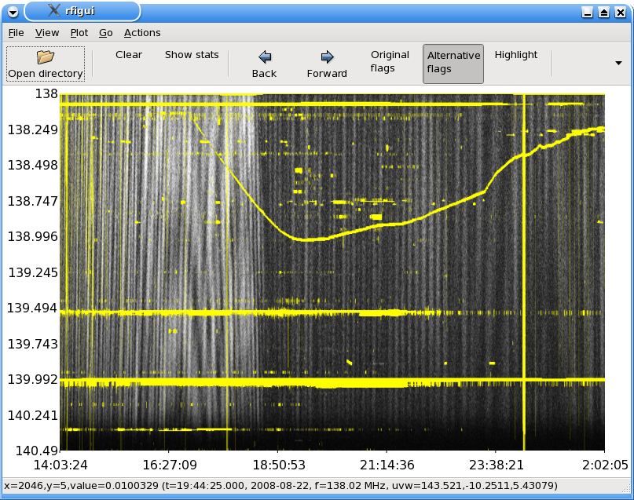Note that this both solves most of the flagging problems of sun's fringes and also solves the bandpass problem. However, also note that the frequency changing interfering source has a bit more gaps, especially near 17.30 hours at 138.3 MHz. While this flagging would be good enough for further reduction, I would prefer the previous changes and put the sensitivity somewhere in the middle (by tweaking the end result).
I have tried to isolate the effect of each important parameter in this example. Taking all these changes together will enhance the result further. The summary of changes and conclusions was:
This is the end result:
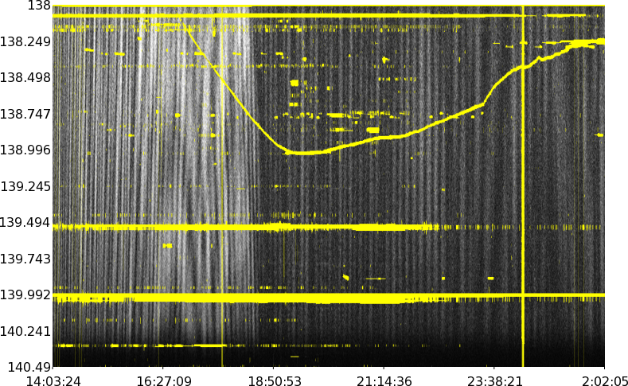The fitted background looks like this:
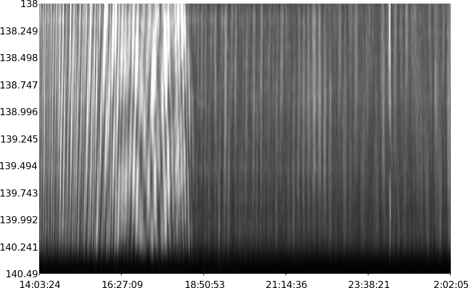Which is a very fair representation of the signal, as can also be seen from the difference:
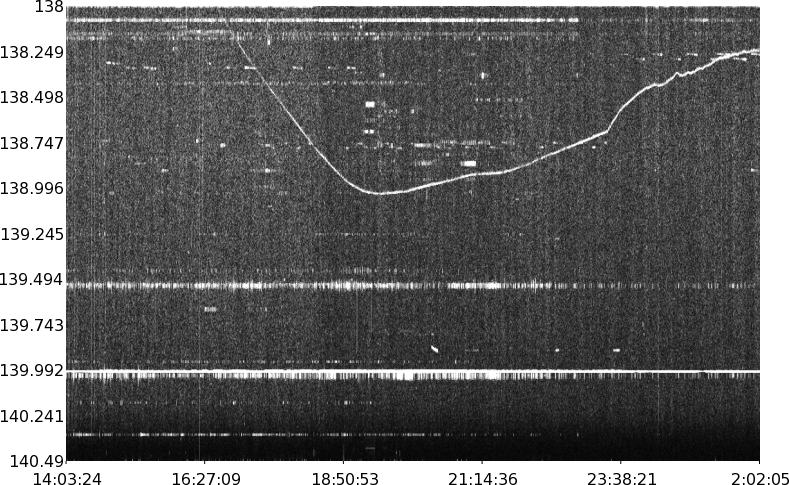This image contains almost no artifacts from the signal, except for a noise increase when the sun is up and during fringes.
A remaining question is how well it works on other baselines. When checking the other baselines, the parameters work very well on all of them. Consider RT0 x RT6, which shows other signs of RFI:
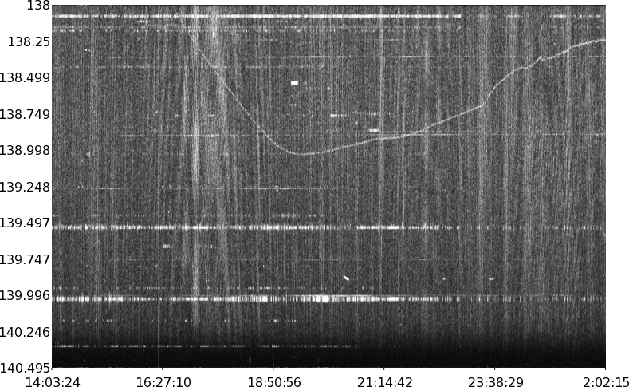The 10.1% flags produced by the optimized strategy:
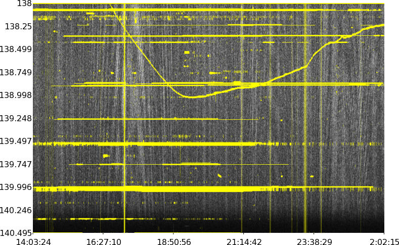This strategy is ready for execution on all 91 WSRT baselines. This can be done by (A) pressing the "FOB" button in the strategy window to encapsulate the strategy in a "For each baseline" action, (B) add a "Write flags" task as last action inside the "For each baseline" action to actually write the flags, (C) export the strategy by pressing "Save" and entering a name and (D) running rficonsole with the saved strategy.
Finally, I would like to note that I increased the number of iterations to "5" because I wanted to be sure that the background fit would be stable. In practice, this is not necessary once all parameters are fixed. If you want to make sure your strategy is also as fast as possible, the number of iterations can be lowered. In this example, changing the number of iterations back to "2" and the start sensitivity to "4" does not significantly change the flags, but is 2x faster.
The "change resolution" action also has a lot of effect on the performance. Once all parameter optimizations were applied, changing the resolution change action back did not severely change the accuracy, so if performance would be an issue, I would revert the change resolution optimization.
Wall-clock time performance on my desktop machine of flagging a single baseline:
In all cases, no visible change in accuracy is visible. Note that when flagging multiple baselines, strategies can be executed multithreaded, so by using a multi core machine, the total time can be considerably lowered. Flagging this set on an 8 core machine toke in the order of a few minutes.
I would like to thank Ger de Bruyn for providing the data that has been used in this example.